today <- Sys.Date()
format(today, format = "%A %d %B %Y")[1] "Thursday 22 December 2022"Last compiled
today <- Sys.Date()
format(today, format = "%A %d %B %Y")[1] "Thursday 22 December 2022"#library(COTAN)
library(data.table)
library(Matrix)
library(ggrepel)Loading required package: ggplot2library(stringr)
#library(factoextra)
#library(Rtsne)
library(utils)
#library(plotly)
#library(tidyverse)
#library(htmlwidgets)
#library(MASS)
#library(Seurat)
#library(dendextend)
devtools::load_all("../../../COTAN/")ℹ Loading COTANpatient <- "patient5_Uninvolved"
status <- "Uninvolved"
metadata <- readxl::read_excel("../data/tables-mmc2.xlsx",sheet = 1)
metadata <- as.data.frame(metadata[metadata$Patient.ID == "pat. 5"
& metadata$status == status
, ,drop = FALSE])
metadata <- metadata[!is.na(metadata$Sample_ID),]raw.total <- NA
for (sample in metadata$Sample_ID) {
raw <- Seurat::Read10X(paste0("../data/01_raw_data/",sample,"/"),gene.column = 2)
colnames(raw) <- paste0(sample,"_",colnames(raw))
raw <- raw[,!(Matrix::colSums(raw) <= 1)]
print(paste0(sample," dimension ",dim(raw)[1]," ",dim(raw)[2]))
if(is.null(dim(raw.total))){
raw.total <- raw
}else{
if ( identical(rownames(raw),rownames(raw.total) )) {
raw.total <- cbind(raw.total,raw)
}else{
print("Problem!")
break
}
}
}[1] "68 dimension 33694 144813"rm(raw)
gc() used (Mb) gc trigger (Mb) max used (Mb)
Ncells 5236059 279.7 7998072 427.2 7998072 427.2
Vcells 27125562 207.0 58720586 448.1 58720586 448.1dim(raw.total)[1] 33694 144813Define output directory:
root <- "../../Crohn_disease/"
out_dir <- paste0(root,"data/02_cleaned_data/")
out_dir[1] "../../Crohn_disease/data/02_cleaned_data/"We check also the genes
sum(Matrix::rowSums(raw.total) <= 1)[1] 15770And drop the empty rows.
raw.total <- raw.total[!(rowSums(raw.total) <= 5),]
dim(raw.total)[1] 15130 144813raw.total <- raw.total[,!colSums(raw.total) <= 5]
dim(raw.total)[1] 15130 78936obj <- COTAN(raw = raw.total)dim(getRawData(obj))[1] 15130 78936We want to remove cell doublets or multiplets and low-quality or dying cells (with too high mtRNA percentage).
First, we check the library size (UMI number) with an empirical cumulative distribution function.
ECDPlot(obj, yCut = 30)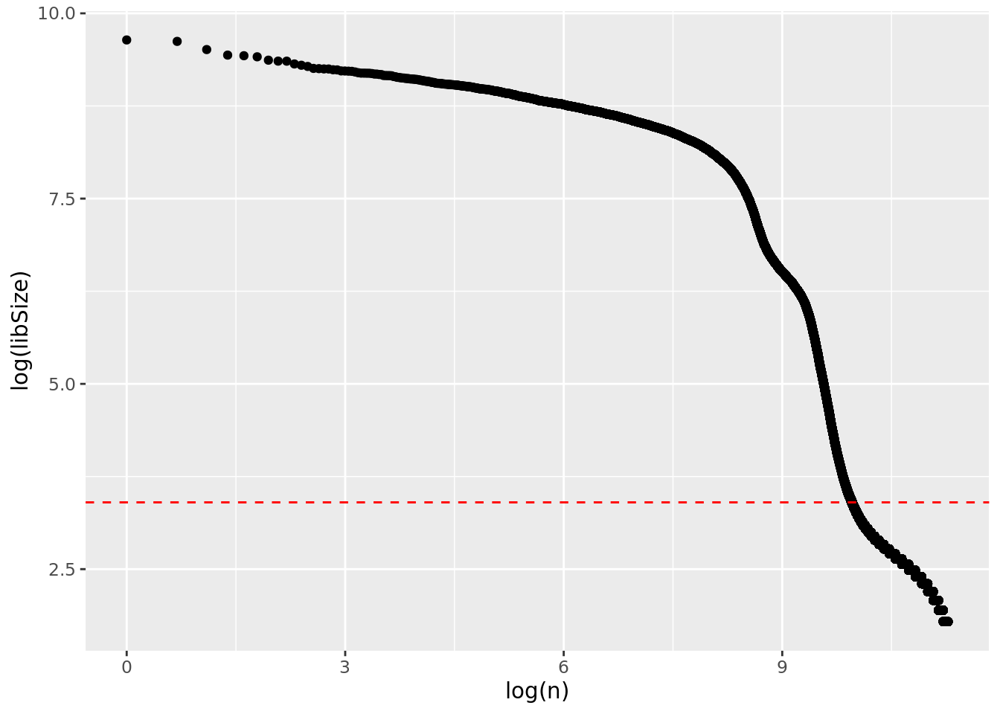
So to start we drop all cells with library sizes lower than 30.
The next plot shows the library size of each cell in a violin and box plot.
obj <- dropGenesCells(obj,cells = names(getCellsSize(obj)[getCellsSize(obj) < 30]))
librarySizePlot(obj,splitPattern = "_",numCols = 1)Scale for y is already present.
Adding another scale for y, which will replace the existing scale.Warning: Removed 1 rows containing missing values (`geom_point()`).
We can subset and drop the unwanted cell by library size.
obj <- dropGenesCells(obj,cells = names(getCellsSize(obj)[getCellsSize(obj) > 10000]))
librarySizePlot(obj,splitPattern = "_",numCols = 1)Scale for y is already present.
Adding another scale for y, which will replace the existing scale.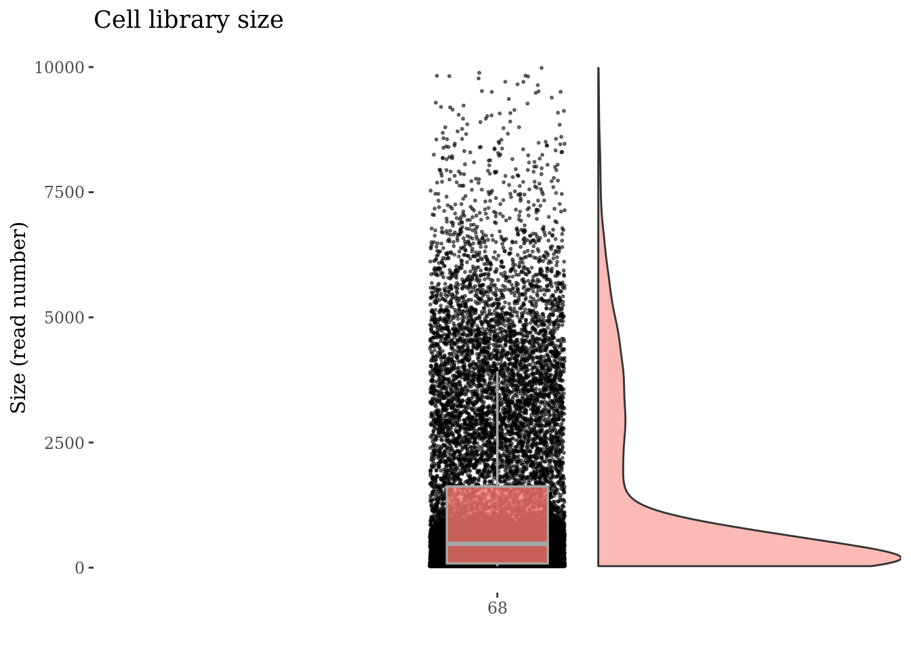
The next plot shows the number of genes detected in each cell in a violin and box plot.
genesSizePlot(obj,splitPattern = "_",numCols = 1)Scale for y is already present.
Adding another scale for y, which will replace the existing scale.Warning: Removed 1 rows containing missing values (`geom_point()`).
Drop cells with less than 30 genes detected
to.drop <- names(sort(colSums(getRawData(obj) > 0),decreasing = F)[sort(colSums(getRawData(obj) > 0),decreasing = F) < 30])
obj <- dropGenesCells(obj,cells = to.drop)
genesSizePlot(obj,splitPattern = "_",numCols = 1)Scale for y is already present.
Adding another scale for y, which will replace the existing scale.Warning: Removed 1 rows containing missing values (`geom_point()`).
And we drop again possible doublets
to.drop <- names(sort(colSums(getRawData(obj) > 0),decreasing = F)[sort(colSums(getRawData(obj) > 0),decreasing = F) > 1500])
obj <- dropGenesCells(obj,cells = to.drop)
genesSizePlot(obj,splitPattern = "_",numCols = 1)Scale for y is already present.
Adding another scale for y, which will replace the existing scale.
Check again the library size
librarySizePlot(obj,splitPattern = "_",numCols = 1)Scale for y is already present.
Adding another scale for y, which will replace the existing scale.
dim(getRawData(obj))[1] 15130 17471We will next have a look at the percentage of reads coming from mitochondrial genes. This can help to drop dying cells: these cells will have a percentage of mitochondrial reads particularly high.
df <- mitochondrialPercentagePlot(obj,splitPattern = "_",numCols = 1,genePrefix = "^MT-")
df$plot
obj <- dropGenesCells(obj,cells = rownames(df$sizes[df$sizes$mit.percentage > 15,]))
df <- mitochondrialPercentagePlot(obj,splitPattern = "_",numCols = 1,genePrefix = "^MT-")
df$plot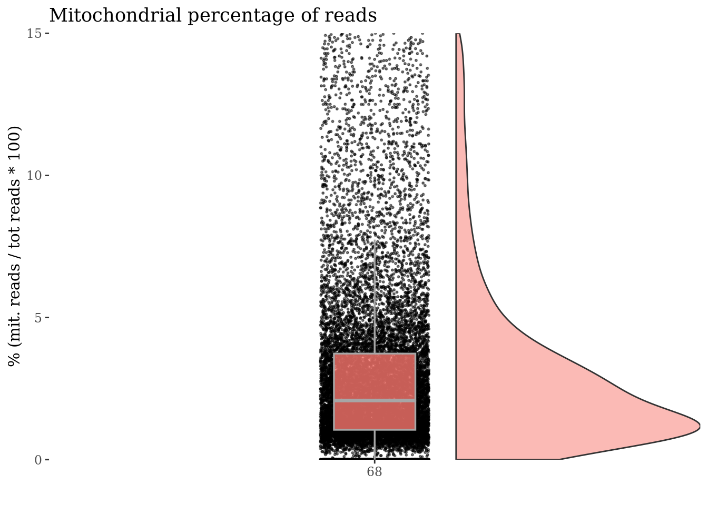
We check again the library size plot
librarySizePlot(obj,splitPattern = "_",numCols = 1)Scale for y is already present.
Adding another scale for y, which will replace the existing scale.Warning: Removed 1 rows containing missing values (`geom_point()`).genesSizePlot(obj,splitPattern = "_",numCols = 1)Scale for y is already present.
Adding another scale for y, which will replace the existing scale.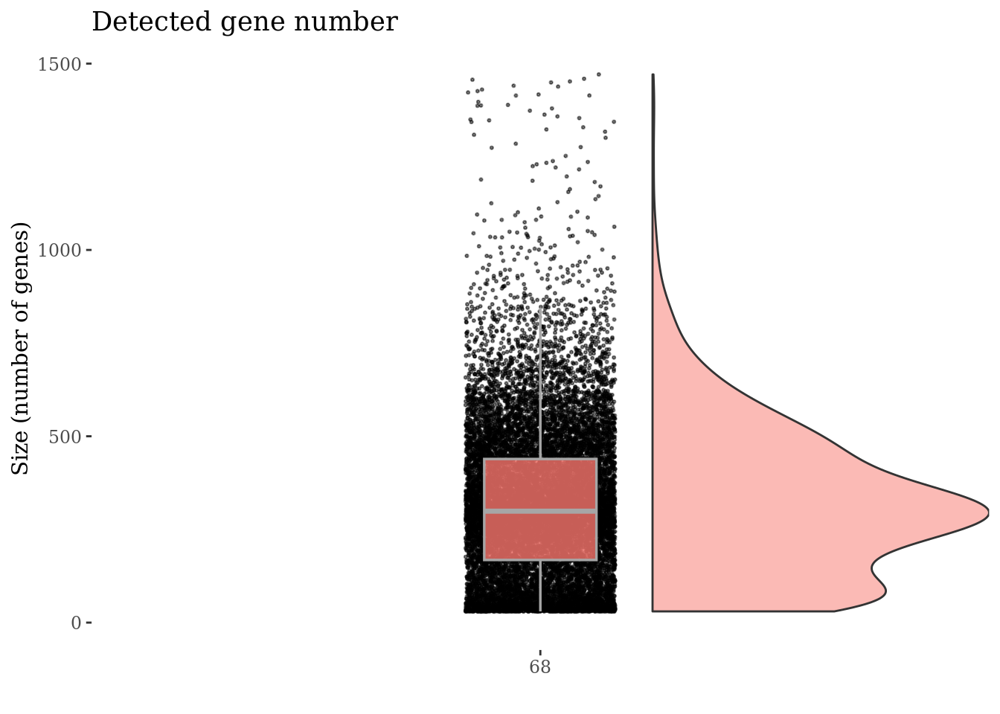
scatterPlot(obj, splitPattern = "[_]", numCols = 1)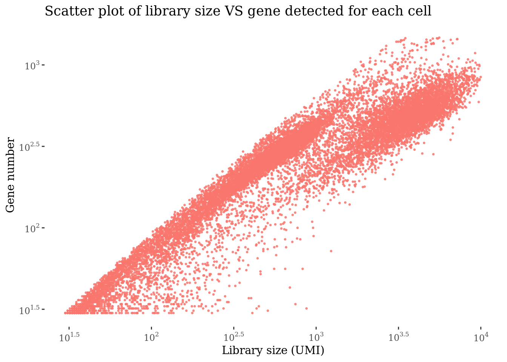
Min gene number
sort(colSums(getRawData(obj) > 0),decreasing = F)[1:10]68_AAGACAGACCAATG-1 68_AATGAGGATGGGAG-1 68_ACAACCGATCCTGC-1 68_ACCAGCCTGAGACG-1
30 30 30 30
68_ACCTGGCTCACACA-1 68_ACGTGCCTTTCAGG-1 68_AGATATTGATTCTC-1 68_AGATATTGTGACAC-1
30 30 30 30
68_AGCTCGCTCACAAC-1 68_AGCTTACTTCTATC-1
30 30 hist(sort(colSums(getRawData(obj) > 0),decreasing = F),breaks = 100)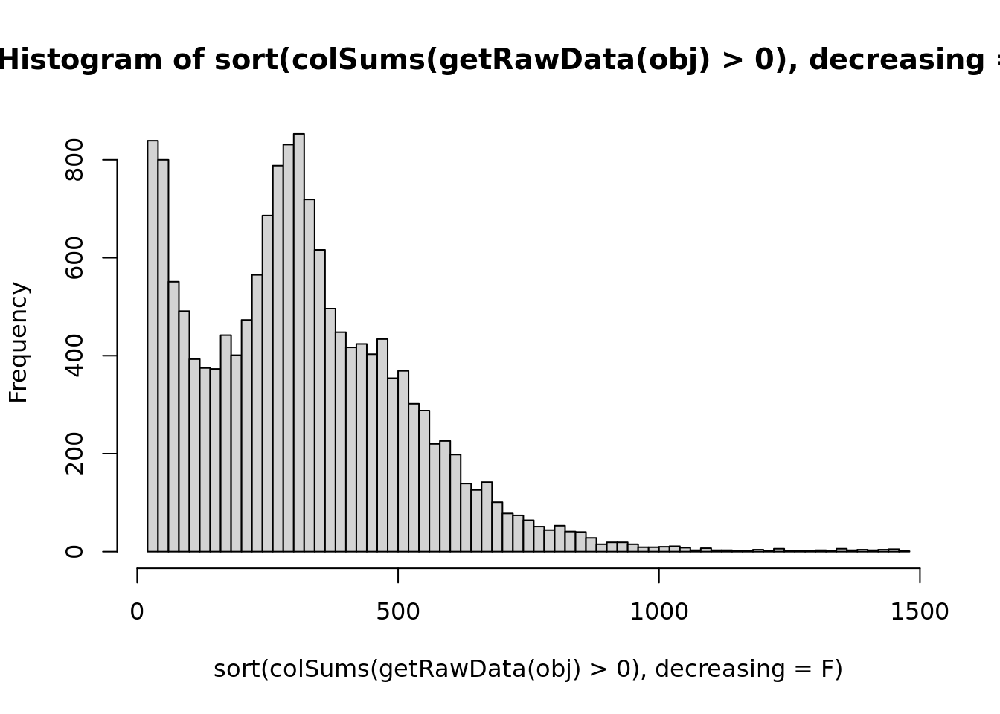
obj <- initializeMetaDataset(obj,
GEO="GSM3972010_68",
sequencingMethod = "10X",
sampleCondition = paste0("patient.5 ileum ",status))Setting new log level to 1n_it = 1
print(paste("Condition ", patient ,sep = ""))[1] "Condition patient5_Uninvolved"#--------------------------------------
print(paste("n cells", getNumCells(obj), sep = " "))[1] "n cells 15937"First, we create a directory to store all information regarding the data cleaning.
if(!file.exists(out_dir)){
dir.create(file.path(out_dir))
}
if(!file.exists(paste(out_dir,"cleaning", sep = ""))){
dir.create(file.path(out_dir, "cleaning"))
}gc() used (Mb) gc trigger (Mb) max used (Mb)
Ncells 5308224 283.5 7998072 427.2 7998072 427.2
Vcells 34856252 266.0 70618528 538.8 70618286 538.8obj <- clean(obj)Genes/cells selection done: dropped [6666] genes and [0] cellsplots <- cleanPlots(obj)Warning in asMethod(object): sparse->dense coercion: allocating vector of size
1.0 GiBplots$pcaCells
pcaCells <- plots$pcaCells
pcaCells$data$code <- str_split(rownames(plots$pcaCells$data),pattern = "_",simplify = T)[,1]
ggplot(pcaCells$data, aes(x=PC1, y=PC2,colour =code)) +
geom_point(alpha = 0.5, size=0.5)ggplot(pcaCells$data, aes(x=PC1, y=PC3,colour =code)) +
geom_point(alpha = 0.5, size=0.5)plots$genes
To color the PCA based on cells’ RNA extraction efficiency
plots[["UDE"]]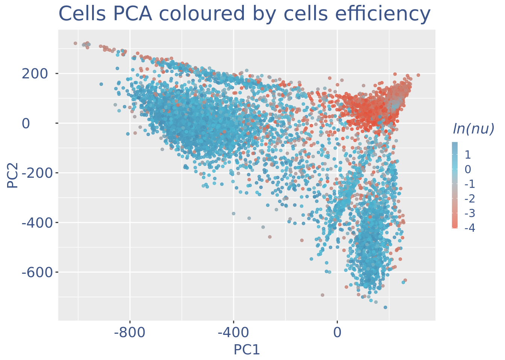
UDE (color) should not correlate with principal components! This is very important. The next part is used to remove the cells with efficiency too low.
plots[["nu"]]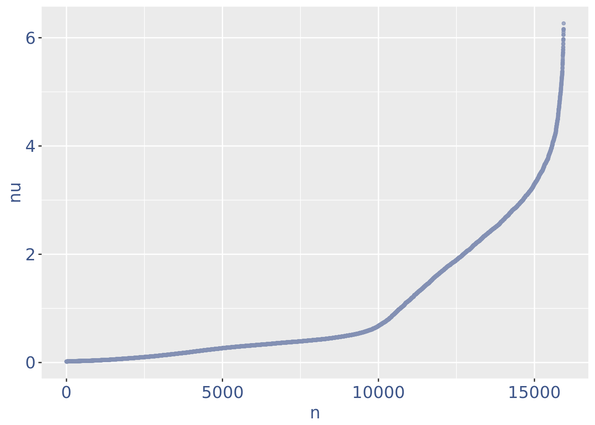
We can zoom on the smallest values and, if we detect a clear elbow, we can decide to remove the cells low UDE cells.
yset = 0.05#threshold to remove low UDE cells
plots[["nu"]] +
ylim(0,1) + xlim(0,2000) +
geom_hline(yintercept=yset, linetype="dashed", color = "darkred") +
annotate(geom="text", x=200, y=0.5,
label=paste("to remove cells with nu < ",yset,sep = " "),
color="darkred", size=4.5)Warning: Removed 13937 rows containing missing values (`geom_point()`).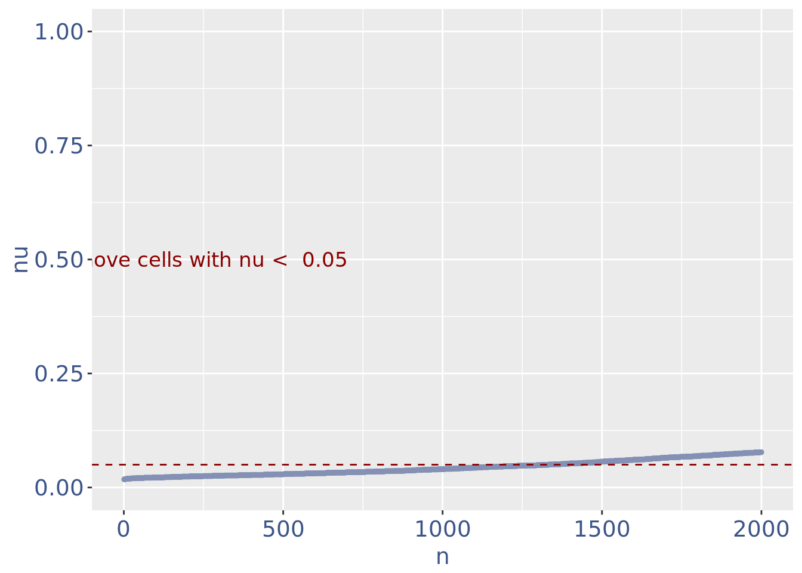
saveRDS(obj,paste0(out_dir,patient,"_obj_cotan.RDS"))patient <- "patient5_Involved"
status <- "Involved"
metadata <- readxl::read_excel("../data/tables-mmc2.xlsx",sheet = 1)
metadata <- as.data.frame(metadata[metadata$Patient.ID == "pat. 5"
& metadata$status %in% status
,])
metadata <- metadata[!is.na(metadata$Sample_ID),]raw.total <- NA
for (sample in metadata$Sample_ID) {
raw <- Seurat::Read10X(paste0("../data/01_raw_data/",sample,"/"),gene.column = 2)
colnames(raw) <- paste0(sample,"_",colnames(raw))
raw <- raw[,!(Matrix::colSums(raw) <= 1)]
print(paste0(sample," dimension ",dim(raw)[1]," ",dim(raw)[2]))
if(is.null(dim(raw.total))){
raw.total <- raw
}else{
if ( identical(rownames(raw),rownames(raw.total) )) {
raw.total <- cbind(raw.total,raw)
}else{
print("Problem!")
break
}
}
}[1] "69 dimension 33694 103544"rm(raw)
gc() used (Mb) gc trigger (Mb) max used (Mb)
Ncells 5402918 288.6 7998072 427.2 7998072 427.2
Vcells 46500628 354.8 265898889 2028.7 431366740 3291.1dim(raw.total)[1] 33694 103544We check also the genes
sum(Matrix::rowSums(raw.total) <= 1)[1] 16276And drop the empty rows.
raw.total <- raw.total[!(rowSums(raw.total) <= 5),]
dim(raw.total)[1] 14551 103544raw.total <- raw.total[,!colSums(raw.total) <= 5]
dim(raw.total)[1] 14551 57462obj <- COTAN(raw = raw.total)dim(getRawData(obj))[1] 14551 57462We want to remove cell doublets or multiplets and low-quality or dying cells (with too high mtRNA percentage).
First, we check the library size (UMI number) with an empirical cumulative distribution function.
ECDPlot(obj, yCut = 30)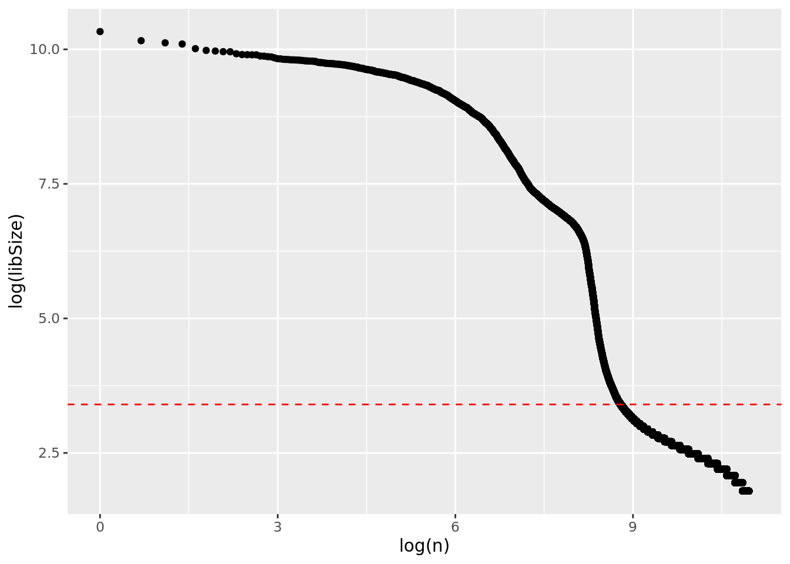
So to start we drop all cells with library sizes lower than 30.
The next plot shows the library size of each cell in a violin and box plot.
obj <- dropGenesCells(obj,cells = names(getCellsSize(obj)[getCellsSize(obj) < 30]))
librarySizePlot(obj,splitPattern = "_",numCols = 1)Scale for y is already present.
Adding another scale for y, which will replace the existing scale.We can subset and drop the unwanted cell by library size.
obj <- dropGenesCells(obj,cells = names(getCellsSize(obj)[getCellsSize(obj) > 20000]))
librarySizePlot(obj,splitPattern = "_",numCols = 1)Scale for y is already present.
Adding another scale for y, which will replace the existing scale.Warning: Removed 1 rows containing missing values (`geom_point()`).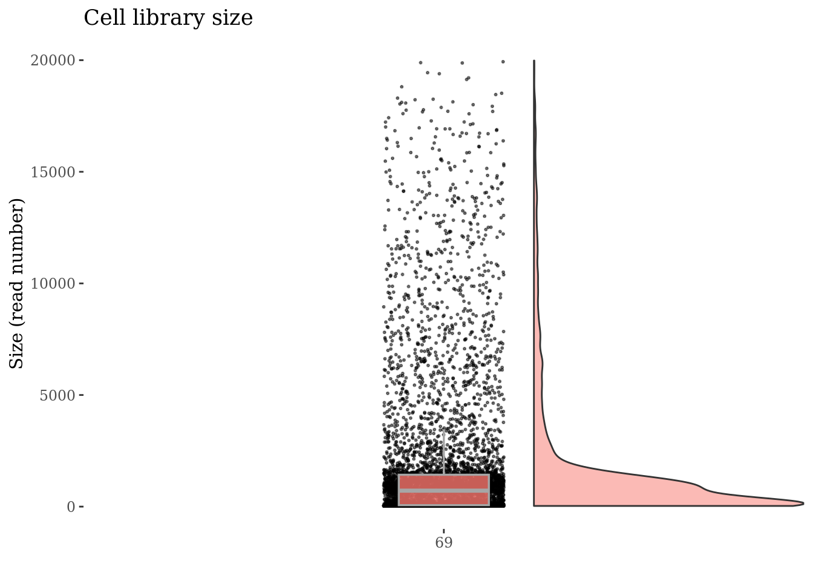
The next plot shows the number of genes detected in each cell in a violin and box plot.
genesSizePlot(obj,splitPattern = "_",numCols = 1)Scale for y is already present.
Adding another scale for y, which will replace the existing scale.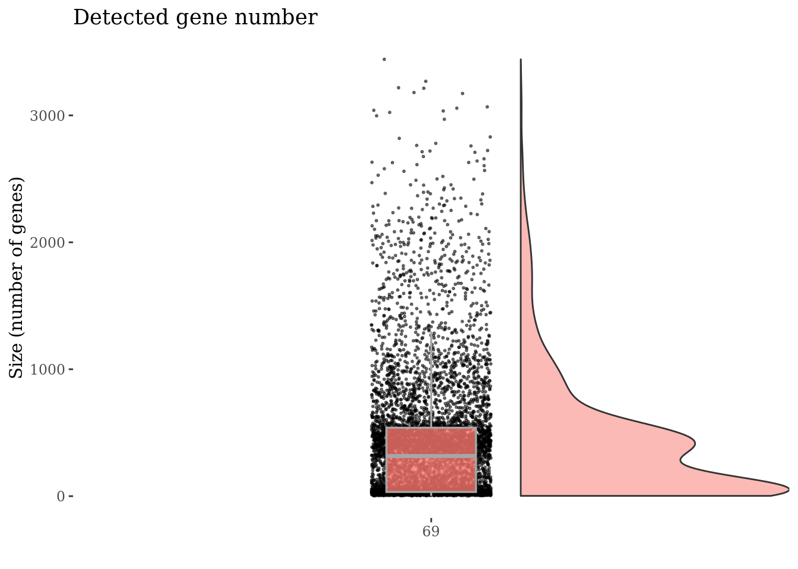
to.drop <- names(sort(colSums(getRawData(obj) > 0),decreasing = F)[sort(colSums(getRawData(obj) > 0),decreasing = F) < 30])
obj <- dropGenesCells(obj,cells = to.drop)
genesSizePlot(obj,splitPattern = "_",numCols = 1)Scale for y is already present.
Adding another scale for y, which will replace the existing scale.Warning: Removed 1 rows containing missing values (`geom_point()`).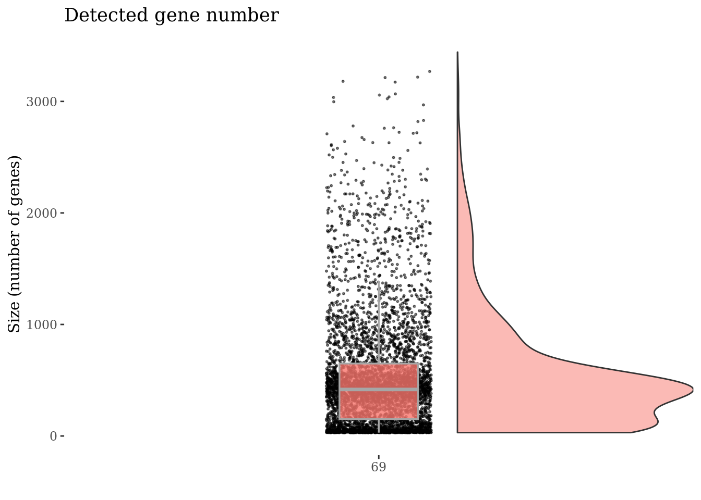
And we drop again possible doublets
to.drop <- names(sort(colSums(getRawData(obj) > 0),decreasing = F)[sort(colSums(getRawData(obj) > 0),decreasing = F) > 2500])
obj <- dropGenesCells(obj,cells = to.drop)
genesSizePlot(obj,splitPattern = "_",numCols = 1)Scale for y is already present.
Adding another scale for y, which will replace the existing scale.Warning: Removed 1 rows containing missing values (`geom_point()`).
Check again the library size
librarySizePlot(obj,splitPattern = "_",numCols = 1)Scale for y is already present.
Adding another scale for y, which will replace the existing scale.Warning: Removed 1 rows containing missing values (`geom_point()`).
dim(getRawData(obj))[1] 14551 5156We will next have a look at the percentage of reads coming from mitochondrial genes. This can help to drop dying cells: these cells will have a percentage of mitochondrial reads particularly high.
df <- mitochondrialPercentagePlot(obj,splitPattern = "_",numCols = 1,genePrefix = "^MT-")
df$plotobj <- dropGenesCells(obj,cells = rownames(df$sizes[df$sizes$mit.percentage > 15,]))
df <- mitochondrialPercentagePlot(obj,splitPattern = "_",numCols = 1,genePrefix = "^MT-")
df$plot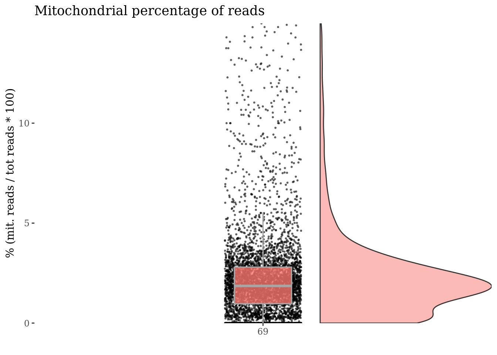
We check again the library size plot
librarySizePlot(obj,splitPattern = "_",numCols = 1)Scale for y is already present.
Adding another scale for y, which will replace the existing scale.Warning: Removed 1 rows containing missing values (`geom_point()`).genesSizePlot(obj,splitPattern = "_",numCols = 1)Scale for y is already present.
Adding another scale for y, which will replace the existing scale.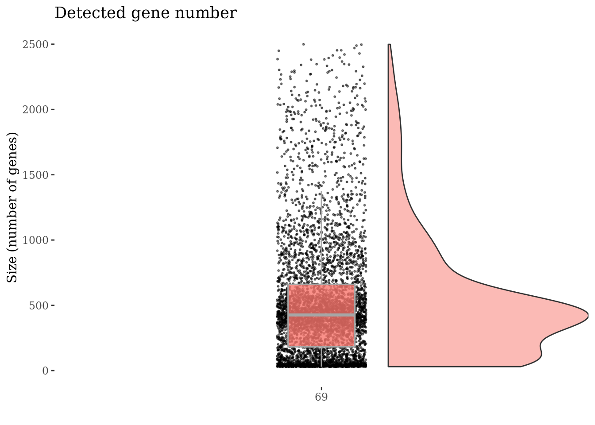
scatterPlot(obj, splitPattern = "[_]", numCols = 1)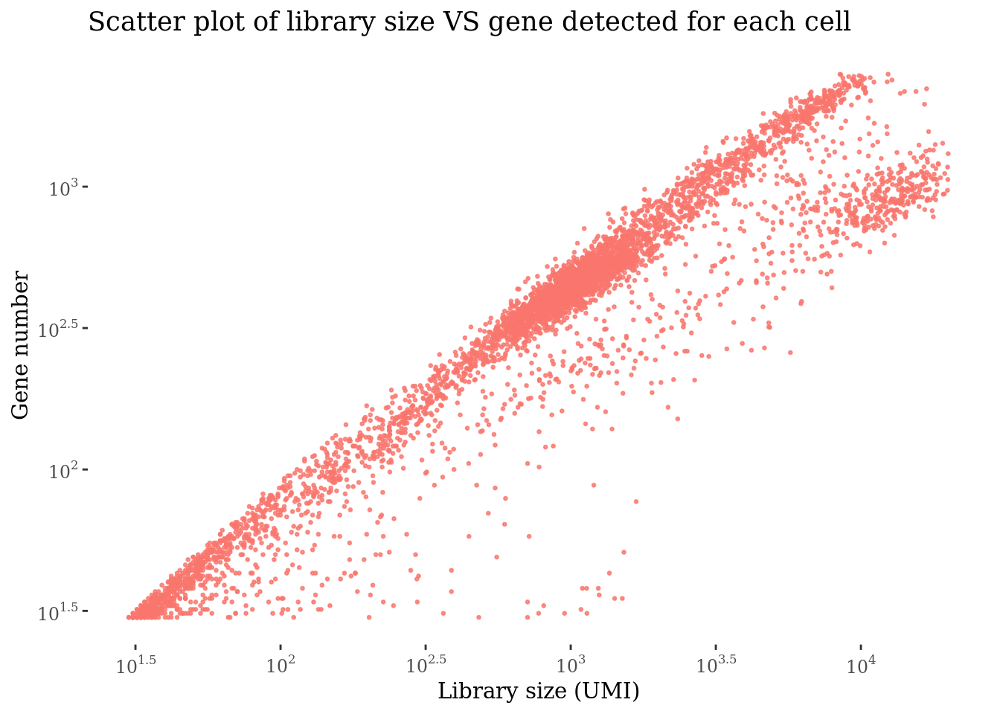
Min gene number
sort(colSums(getRawData(obj) > 0),decreasing = F)[1:10]69_AACCCAGAACTACG-1 69_AACGTGTGTAGCGT-1 69_AACTACCTCACTTT-1 69_AAGACAGACCACCT-1
30 30 30 30
69_ACGGTATGGGAGCA-1 69_AGTTATGATTCCGC-1 69_AGTTTCACGAAACA-1 69_AGTTTCACTGGTGT-1
30 30 30 30
69_ATCACTACCAAAGA-1 69_ATCGAGTGTTACTC-1
30 30 hist(sort(colSums(getRawData(obj) > 0),decreasing = F),breaks = 100)
obj <- initializeMetaDataset(obj,
GEO="GSM3972009_69",
sequencingMethod = "10X",
sampleCondition = paste0("patient.5 ileum ",status))n_it = 1
print(paste("Condition ", patient ,sep = ""))[1] "Condition patient5_Involved"#--------------------------------------
print(paste("n cells", getNumCells(obj), sep = " "))[1] "n cells 4957"gc() used (Mb) gc trigger (Mb) max used (Mb)
Ncells 5338985 285.2 7998072 427.2 7998072 427.2
Vcells 42101063 321.3 212719112 1623.0 431366740 3291.1obj <- clean(obj)Genes/cells selection done: dropped [3092] genes and [0] cellsplots <- cleanPlots(obj)
plots$pcaCells
pcaCells <- plots$pcaCells
pcaCells$data$code <- str_split(rownames(plots$pcaCells$data),pattern = "_",simplify = T)[,1]
ggplot(pcaCells$data, aes(x=PC1, y=PC2,colour =code)) +
geom_point(alpha = 0.5, size=0.5)
ggplot(pcaCells$data, aes(x=PC1, y=PC3,colour =code)) +
geom_point(alpha = 0.5, size=0.5)plots$genes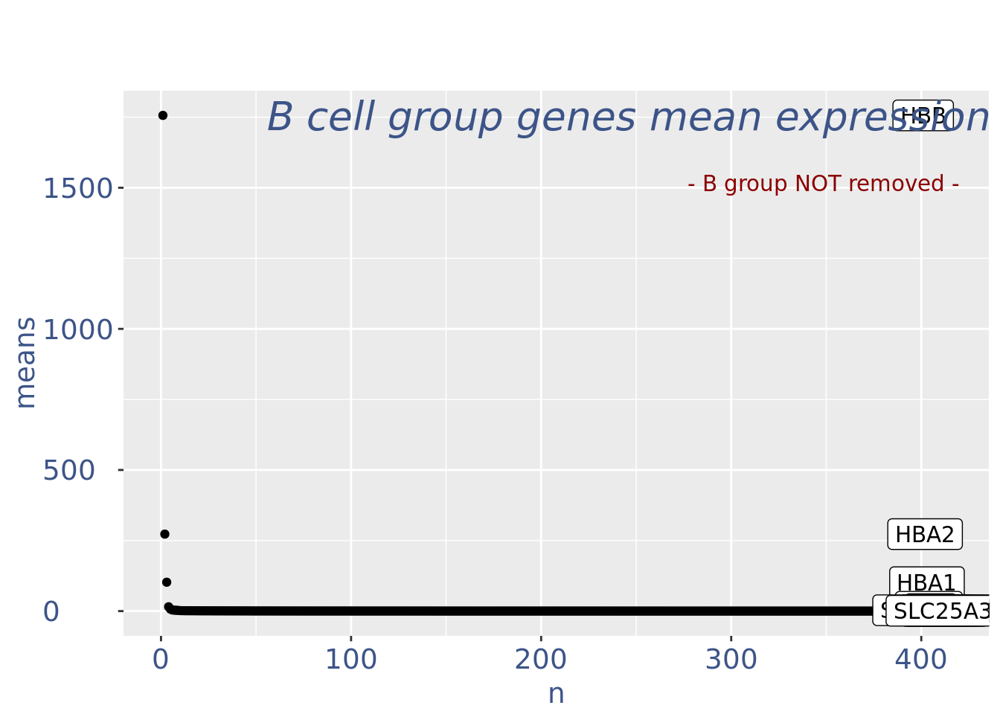
To color the PCA based on cells’ RNA extraction efficiency
plots[["UDE"]]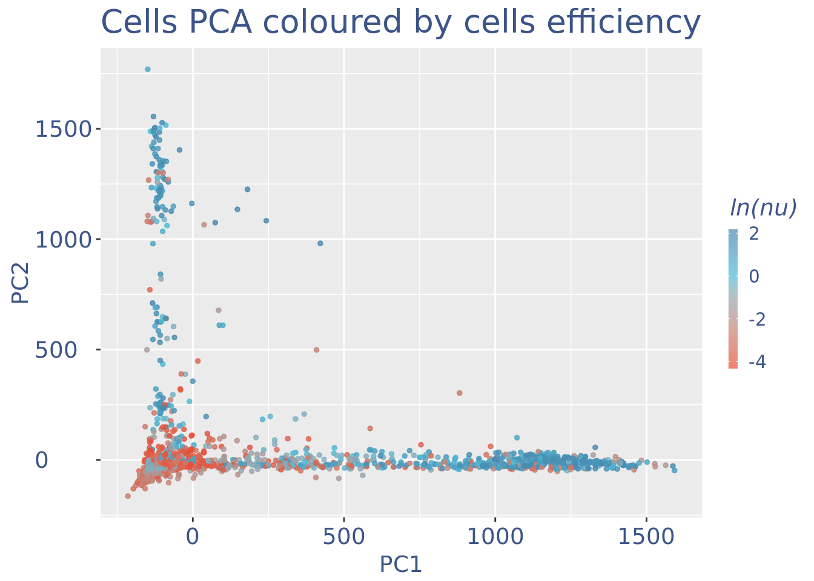
UDE (color) should not correlate with principal components! This is very important. The next part is used to remove the cells with efficiency too low.
plots[["nu"]]
We can zoom on the smallest values and, if we detect a clear elbow, we can decide to remove the cells low UDE cells.
yset = 0.05#threshold to remove low UDE cells
plots[["nu"]] +
ylim(0,1) + xlim(0,8000) +
geom_hline(yintercept=yset, linetype="dashed", color = "darkred") +
annotate(geom="text", x=200, y=0.05,
label=paste("to remove cells with nu < ",yset,sep = " "),
color="darkred", size=4.5)Warning: Removed 1159 rows containing missing values (`geom_point()`).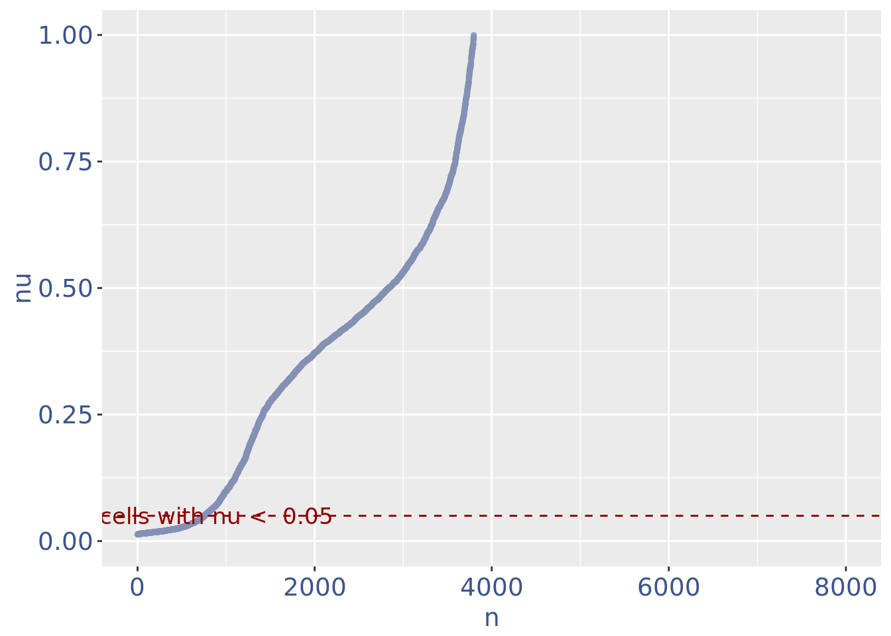
saveRDS(obj,paste0(out_dir,patient,"_obj_cotan.RDS"))patient <- "patient5_PBMC"
status <- "PBMC"
metadata <- readxl::read_excel("../data/tables-mmc2.xlsx",sheet = 1)
metadata <- as.data.frame(metadata[metadata$Patient.ID == "pat. 5"
& metadata$status %in% status
,])
metadata <- metadata[!is.na(metadata$Sample_ID),]raw.total <- NA
for (sample in metadata$Sample_ID) {
raw <- Seurat::Read10X(paste0("../data/01_raw_data/",sample,"/"),gene.column = 2)
colnames(raw) <- paste0(sample,"_",colnames(raw))
raw <- raw[,!(Matrix::colSums(raw) <= 1)]
print(paste0(sample," dimension ",dim(raw)[1]," ",dim(raw)[2]))
if(is.null(dim(raw.total))){
raw.total <- raw
}else{
if ( identical(rownames(raw),rownames(raw.total) )) {
raw.total <- cbind(raw.total,raw)
}else{
print("Problem!")
break
}
}
}[1] "67 dimension 33694 67584"rm(raw)
gc() used (Mb) gc trigger (Mb) max used (Mb)
Ncells 5358548 286.2 7998072 427.2 7998072 427.2
Vcells 31504640 240.4 136140232 1038.7 431366740 3291.1dim(raw.total)[1] 33694 67584We check also the genes
sum(Matrix::rowSums(raw.total) <= 1)[1] 21396And drop the empty rows.
raw.total <- raw.total[!(Matrix::rowSums(raw.total) <= 5),]
dim(raw.total)[1] 9490 67584raw.total <- raw.total[,!Matrix::colSums(raw.total) <= 5]
dim(raw.total)[1] 9490 18833obj <- COTAN(raw = raw.total)dim(getRawData(obj))[1] 9490 18833We want to remove cell doublets or multiplets and low-quality or dying cells (with too high mtRNA percentage).
First, we check the library size (UMI number) with an empirical cumulative distribution function.
ECDPlot(obj, yCut = 20)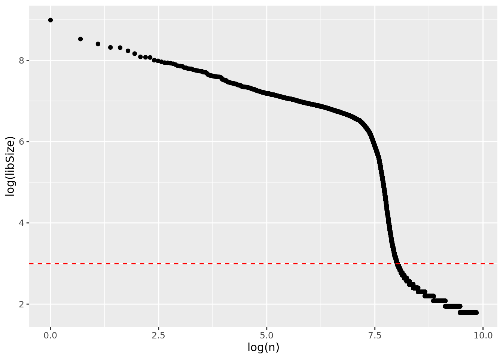
So to start we drop all cells with library sizes lower than 20.
The next plot shows the library size of each cell in a violin and box plot.
obj <- dropGenesCells(obj,cells = names(getCellsSize(obj)[getCellsSize(obj) < 20]))
librarySizePlot(obj,splitPattern = "_",numCols = 1)Scale for y is already present.
Adding another scale for y, which will replace the existing scale.Warning: Removed 1 rows containing missing values (`geom_point()`).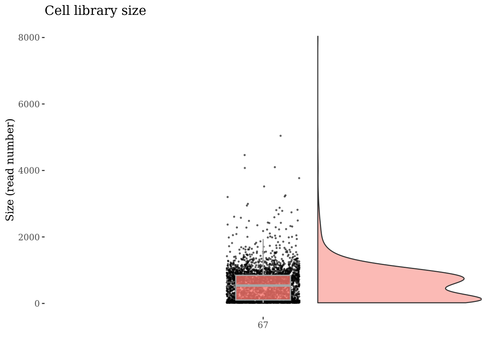
We can subset and drop the unwanted cell by library size.
obj <- dropGenesCells(obj,cells = names(getCellsSize(obj)[getCellsSize(obj) > 2000]))
librarySizePlot(obj,splitPattern = "_",numCols = 1)Scale for y is already present.
Adding another scale for y, which will replace the existing scale.
The next plot shows the number of genes detected in each cell in a violin and box plot.
genesSizePlot(obj,splitPattern = "_",numCols = 1)Scale for y is already present.
Adding another scale for y, which will replace the existing scale.Warning: Removed 1 rows containing missing values (`geom_point()`).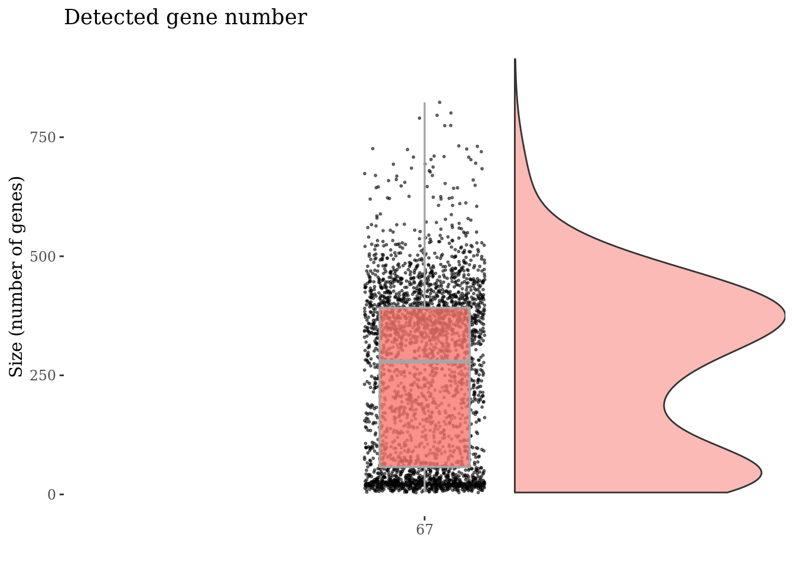
to.drop <- names(sort(colSums(getRawData(obj) > 0),decreasing = F)[sort(colSums(getRawData(obj) > 0),decreasing = F) < 10])
obj <- dropGenesCells(obj,cells = to.drop)
genesSizePlot(obj,splitPattern = "_",numCols = 1)Scale for y is already present.
Adding another scale for y, which will replace the existing scale.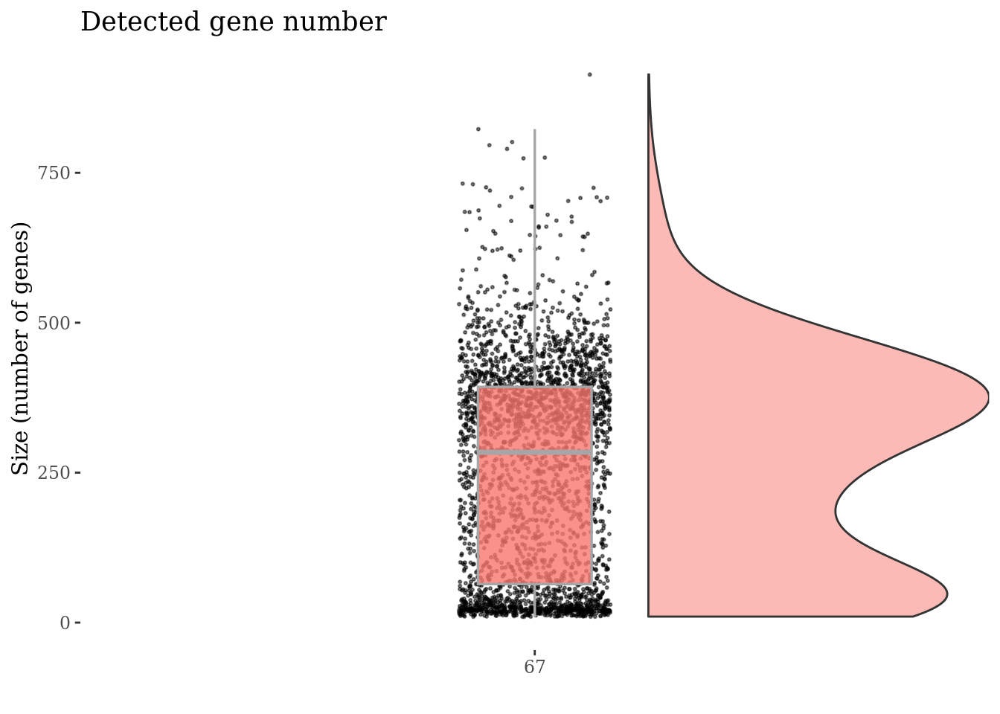
And we drop again possible doublets
to.drop <- names(sort(colSums(getRawData(obj) > 0),decreasing = F)[sort(colSums(getRawData(obj) > 0),decreasing = F) > 750])
obj <- dropGenesCells(obj,cells = to.drop)
genesSizePlot(obj,splitPattern = "_",numCols = 1)Scale for y is already present.
Adding another scale for y, which will replace the existing scale.
Check again the library size
librarySizePlot(obj,splitPattern = "_",numCols = 1)Scale for y is already present.
Adding another scale for y, which will replace the existing scale.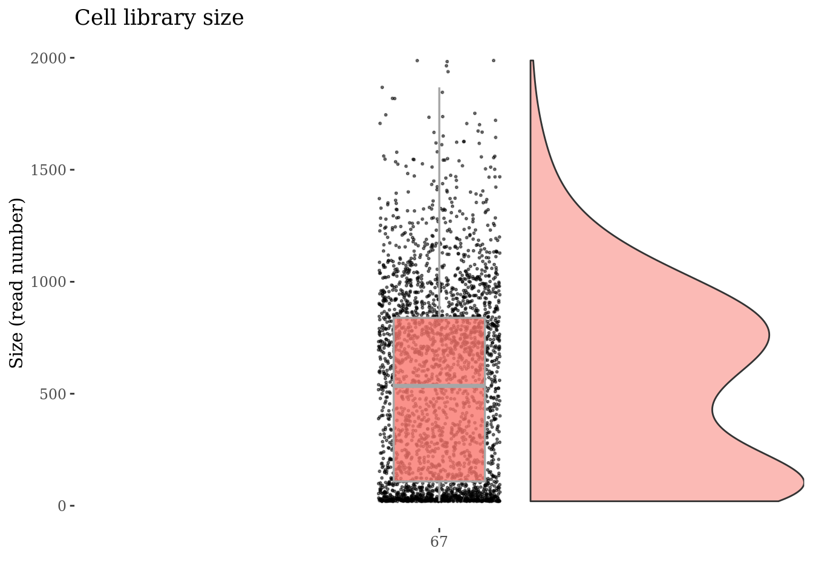
dim(getRawData(obj))[1] 9490 2967We will next have a look at the percentage of reads coming from mitochondrial genes. This can help to drop dying cells: these cells will have a percentage of mitochondrial reads particularly high.
df <- mitochondrialPercentagePlot(obj,splitPattern = "_",numCols = 1,genePrefix = "^MT-")
df$plot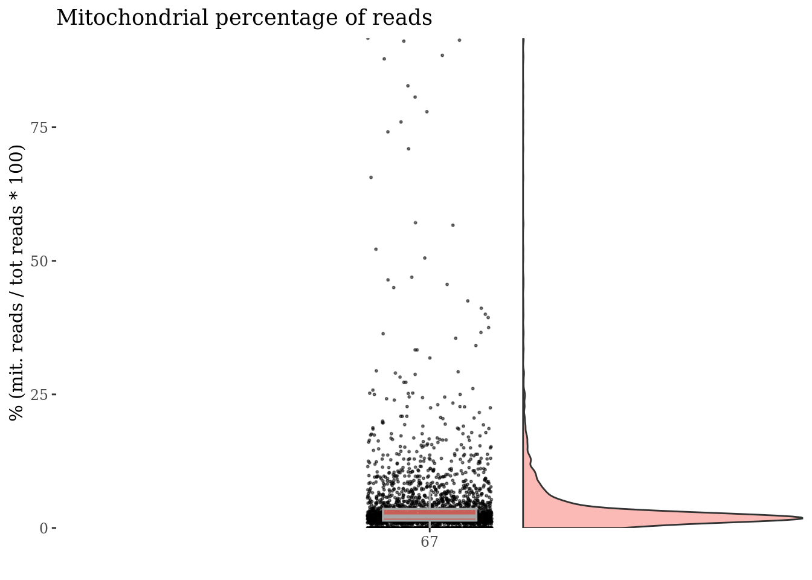
obj <- dropGenesCells(obj,cells = rownames(df$sizes[df$sizes$mit.percentage > 15,]))
df <- mitochondrialPercentagePlot(obj,splitPattern = "_",numCols = 1,genePrefix = "^MT-")
df$plot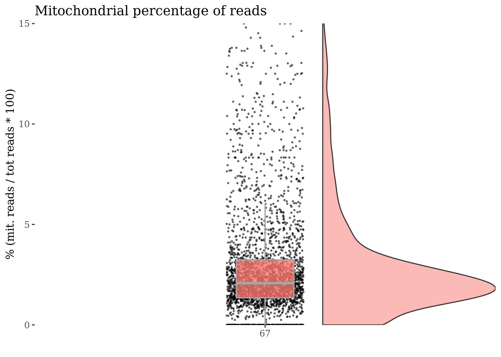
We check again the library size plot
librarySizePlot(obj,splitPattern = "_",numCols = 1)Scale for y is already present.
Adding another scale for y, which will replace the existing scale.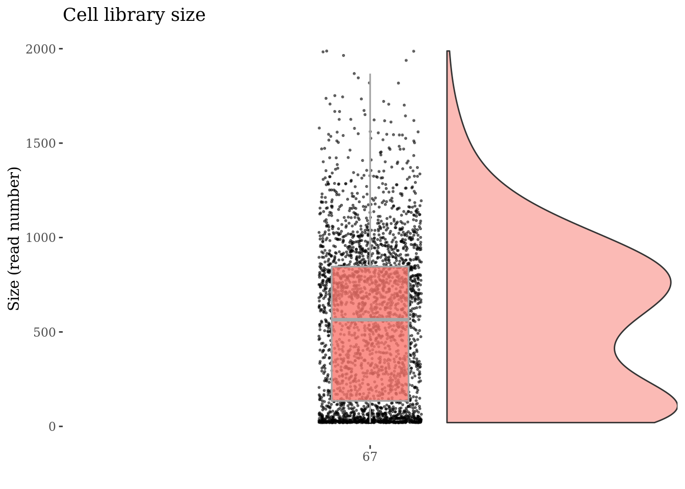
genesSizePlot(obj,splitPattern = "_",numCols = 1)Scale for y is already present.
Adding another scale for y, which will replace the existing scale.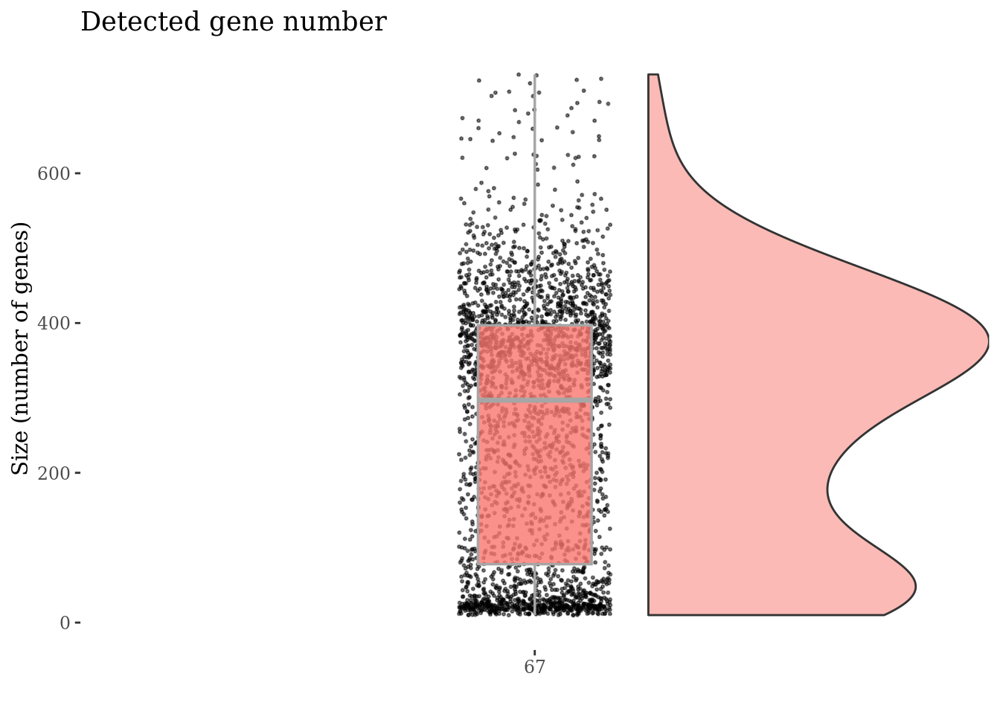
scatterPlot(obj, splitPattern = "[_]", numCols = 1)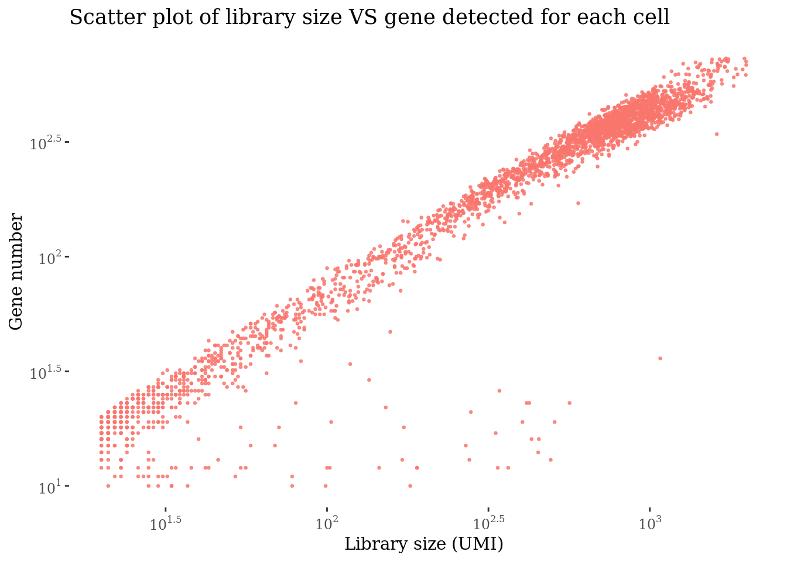
Min gene number
sort(colSums(getRawData(obj) > 0),decreasing = F)[1:10]67_CAAAGCTGGTCTAG-1 67_CACCCATGCTAGTG-1 67_CATGTTACTCTCCG-1 67_CCAAGTGACGTGTA-1
10 10 10 10
67_CTCTAAACGATGAA-1 67_CTCTAATGAGCAAA-1 67_CTTGATTGACGGTT-1 67_GCGCACGAGGTTCA-1
10 10 10 10
67_TTACGTACATGCTG-1 67_AAGGTCTGGTCAAC-1
10 11 hist(sort(colSums(getRawData(obj) > 0),decreasing = F),breaks = 100)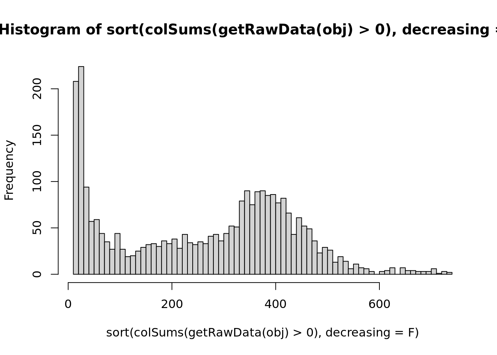
obj <- initializeMetaDataset(obj,
GEO="GSM4761136_67",
sequencingMethod = "10X",
sampleCondition = paste0("patient.11 ileum ",status))n_it = 1
print(paste("Condition ", patient ,sep = ""))[1] "Condition patient5_PBMC"#--------------------------------------
print(paste("n cells", getNumCells(obj), sep = " "))[1] "n cells 2853"gc() used (Mb) gc trigger (Mb) max used (Mb)
Ncells 5288805 282.5 7998072 427.2 7998072 427.2
Vcells 28095727 214.4 108912186 831.0 431366740 3291.1obj <- clean(obj)Genes/cells selection done: dropped [2044] genes and [75] cellsplots <- cleanPlots(obj)
plots$pcaCells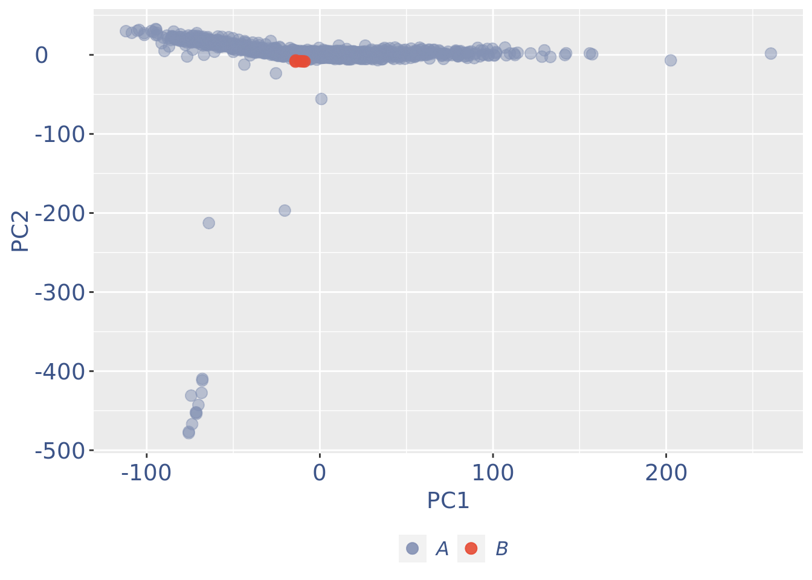
pcaCells <- plots$pcaCells
pcaCells$data$code <- str_split(rownames(plots$pcaCells$data),pattern = "_",simplify = T)[,1]
ggplot(pcaCells$data, aes(x=PC1, y=PC2,colour =code)) +
geom_point(alpha = 0.5, size=0.5)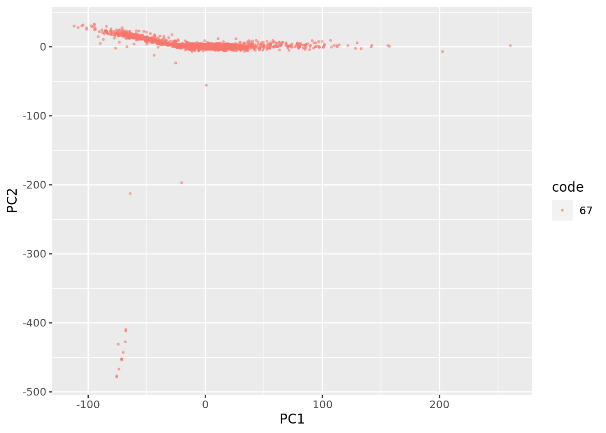
ggplot(pcaCells$data, aes(x=PC1, y=PC3,colour =code)) +
geom_point(alpha = 0.5, size=0.5)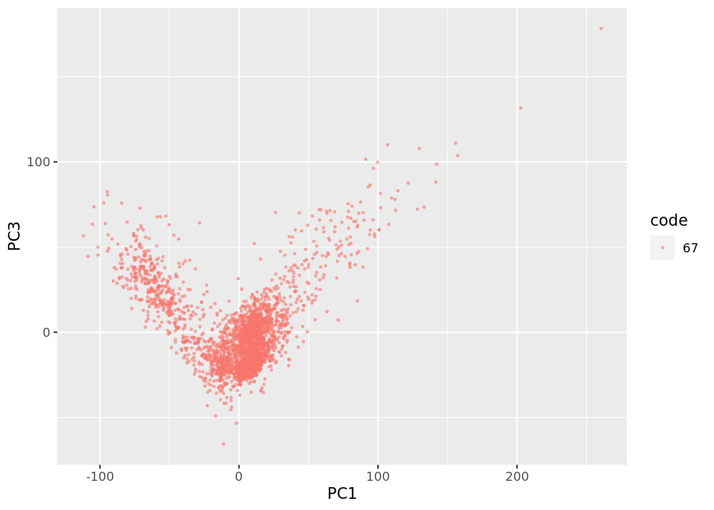
plots$genes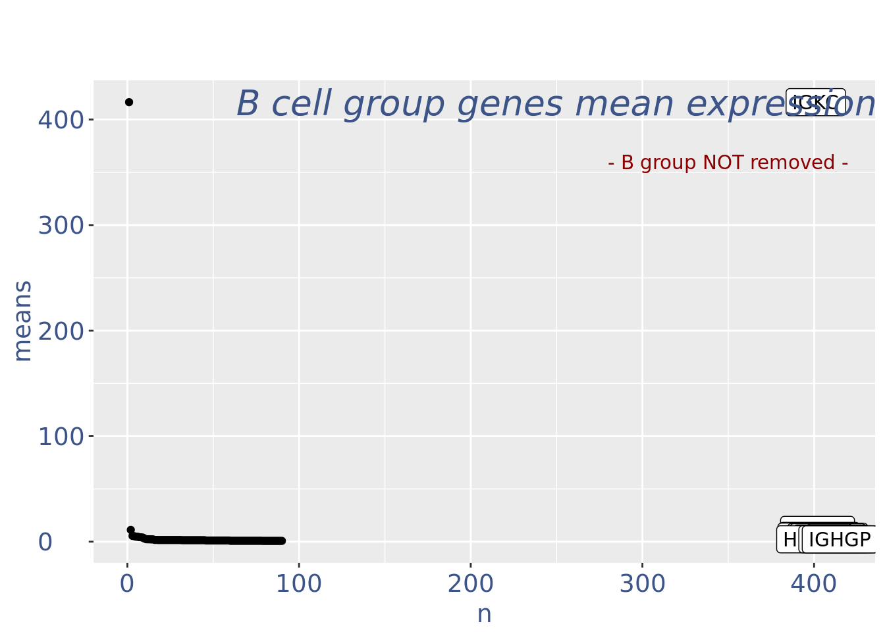
To color the PCA based on cells’ RNA extraction efficiency
plots[["UDE"]]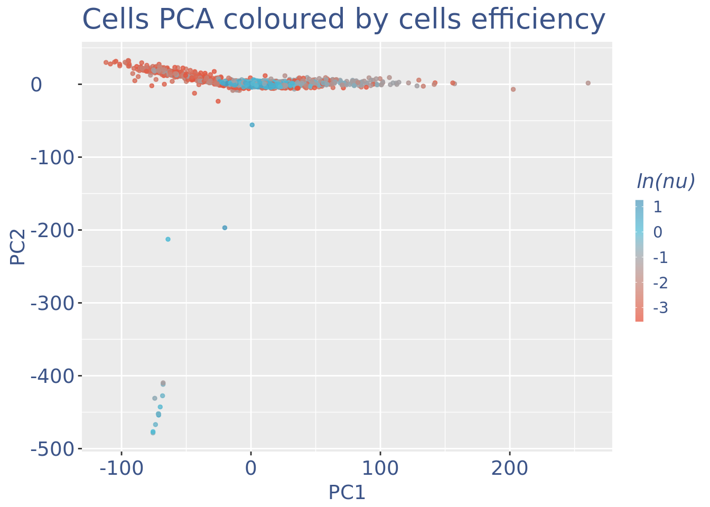
UDE (color) should not correlate with principal components! This is very important. The next part is used to remove the cells with efficiency too low. Here the problem is that there seem to be two different cell populations: one with a low amount of RNA and low number of genes and another with a high amount.(Maybe neutrophils?)
plots[["nu"]]
We can zoom on the smallest values and, if we detect a clear elbow, we can decide to remove the cells low UDE cells.
yset = 0.05#threshold to remove low UDE cells
plots[["nu"]] +
ylim(0,1) + xlim(0,3000) +
geom_hline(yintercept=yset, linetype="dashed", color = "darkred") +
annotate(geom="text", x=200, y=0.05,
label=paste("to remove cells with nu < ",yset,sep = " "),
color="darkred", size=4.5)Warning: Removed 1434 rows containing missing values (`geom_point()`).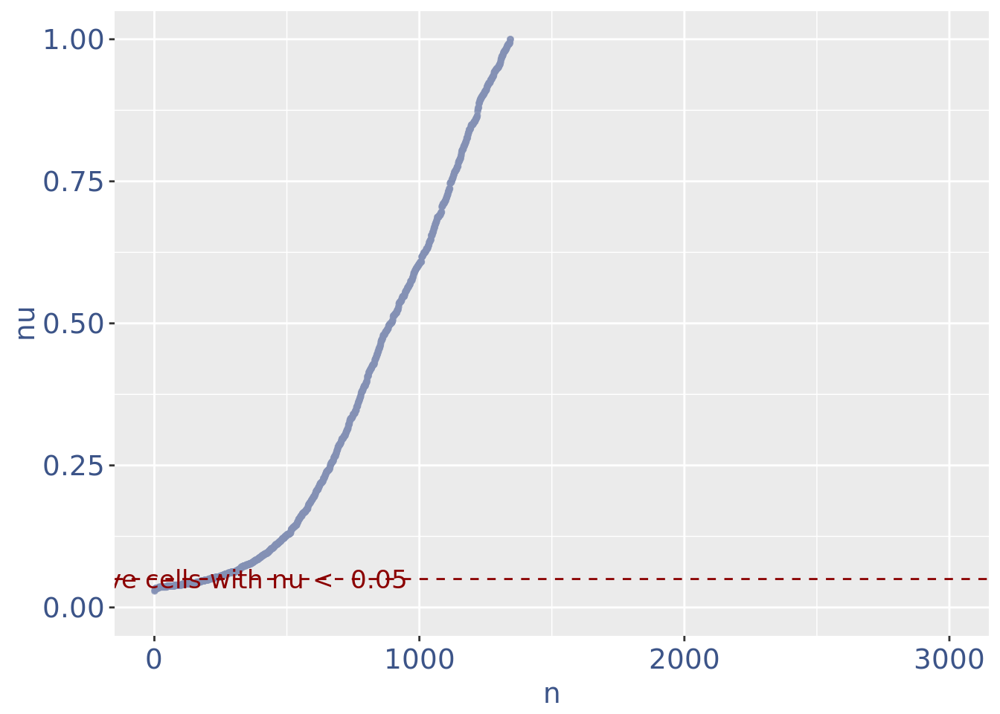
saveRDS(obj,paste0(out_dir,patient,"_obj_cotan.RDS"))sessionInfo()R version 4.2.2 Patched (2022-11-10 r83330)
Platform: x86_64-pc-linux-gnu (64-bit)
Running under: Ubuntu 20.04.5 LTS
Matrix products: default
BLAS: /usr/lib/x86_64-linux-gnu/blas/libblas.so.3.9.0
LAPACK: /usr/lib/x86_64-linux-gnu/lapack/liblapack.so.3.9.0
locale:
[1] LC_CTYPE=C.UTF-8 LC_NUMERIC=C LC_TIME=C.UTF-8
[4] LC_COLLATE=C.UTF-8 LC_MONETARY=C.UTF-8 LC_MESSAGES=C.UTF-8
[7] LC_PAPER=C.UTF-8 LC_NAME=C LC_ADDRESS=C
[10] LC_TELEPHONE=C LC_MEASUREMENT=C.UTF-8 LC_IDENTIFICATION=C
attached base packages:
[1] stats graphics grDevices utils datasets methods base
other attached packages:
[1] COTAN_2.0.0 testthat_3.1.6 stringr_1.4.0 ggrepel_0.9.2
[5] ggplot2_3.4.0 Matrix_1.5-1 data.table_1.14.2
loaded via a namespace (and not attached):
[1] readxl_1.4.0 circlize_0.4.15 plyr_1.8.7
[4] igraph_1.3.4 lazyeval_0.2.2 sp_1.5-0
[7] splines_4.2.2 listenv_0.8.0 scattermore_0.8
[10] usethis_2.1.6 digest_0.6.29 foreach_1.5.2
[13] htmltools_0.5.2 viridis_0.6.2 fansi_1.0.3
[16] magrittr_2.0.3 memoise_2.0.1 tensor_1.5
[19] cluster_2.1.4 doParallel_1.0.17 ROCR_1.0-11
[22] remotes_2.4.2 ComplexHeatmap_2.13.0 globals_0.16.2
[25] matrixStats_0.63.0 spatstat.sparse_3.0-0 prettyunits_1.1.1
[28] colorspace_2.0-3 xfun_0.31 dplyr_1.0.9
[31] callr_3.7.0 crayon_1.5.1 jsonlite_1.8.0
[34] spatstat.data_3.0-0 progressr_0.11.0 survival_3.4-0
[37] zoo_1.8-10 iterators_1.0.14 glue_1.6.2
[40] polyclip_1.10-0 gtable_0.3.0 leiden_0.4.2
[43] GetoptLong_1.0.5 pkgbuild_1.4.0 RcppZiggurat_0.1.6
[46] future.apply_1.10.0 shape_1.4.6 BiocGenerics_0.43.0
[49] abind_1.4-5 scales_1.2.0 DBI_1.1.3
[52] ggthemes_4.2.4 spatstat.random_3.0-1 miniUI_0.1.1.1
[55] Rcpp_1.0.9 viridisLite_0.4.0 xtable_1.8-4
[58] clue_0.3-61 reticulate_1.25 spatstat.core_2.4-4
[61] stats4_4.2.2 htmlwidgets_1.5.4 httr_1.4.4
[64] RColorBrewer_1.1-3 ellipsis_0.3.2 Seurat_4.2.0
[67] factoextra_1.0.7 ica_1.0-2 farver_2.1.0
[70] pkgconfig_2.0.3 uwot_0.1.14 deldir_1.0-6
[73] utf8_1.2.2 labeling_0.4.2 tidyselect_1.2.0
[76] rlang_1.0.6 reshape2_1.4.4 later_1.3.0
[79] cellranger_1.1.0 munsell_0.5.0 tools_4.2.2
[82] cachem_1.0.6 cli_3.4.1 gsubfn_0.7
[85] generics_0.1.2 devtools_2.4.3 ggridges_0.5.4
[88] evaluate_0.18 fastmap_1.1.0 goftest_1.2-3
[91] yaml_2.3.5 processx_3.7.0 knitr_1.40
[94] fs_1.5.2 fitdistrplus_1.1-8 purrr_0.3.4
[97] RANN_2.6.1 dendextend_1.16.0 nlme_3.1-160
[100] pbapply_1.6-0 future_1.29.0 mime_0.12
[103] brio_1.1.3 compiler_4.2.2 rstudioapi_0.13
[106] plotly_4.10.0 png_0.1-7 spatstat.utils_3.0-1
[109] tibble_3.1.7 stringi_1.7.6 ps_1.7.0
[112] desc_1.4.1 rgeos_0.5-9 lattice_0.20-45
[115] vctrs_0.5.0 pillar_1.8.1 lifecycle_1.0.3
[118] spatstat.geom_3.0-3 lmtest_0.9-40 GlobalOptions_0.1.2
[121] RcppAnnoy_0.0.19 cowplot_1.1.1 irlba_2.3.5.1
[124] httpuv_1.6.5 patchwork_1.1.1 R6_2.5.1
[127] promises_1.2.0.1 KernSmooth_2.23-20 gridExtra_2.3
[130] IRanges_2.31.2 parallelly_1.32.1 sessioninfo_1.2.2
[133] codetools_0.2-18 MASS_7.3-58 assertthat_0.2.1
[136] pkgload_1.3.0 proto_1.0.0 rprojroot_2.0.3
[139] rjson_0.2.21 withr_2.5.0 SeuratObject_4.1.2
[142] sctransform_0.3.5 S4Vectors_0.35.0 mgcv_1.8-41
[145] parallel_4.2.2 rpart_4.1.19 grid_4.2.2
[148] tidyr_1.2.0 rmarkdown_2.17 Rfast_2.0.6
[151] Rtsne_0.16 shiny_1.7.1